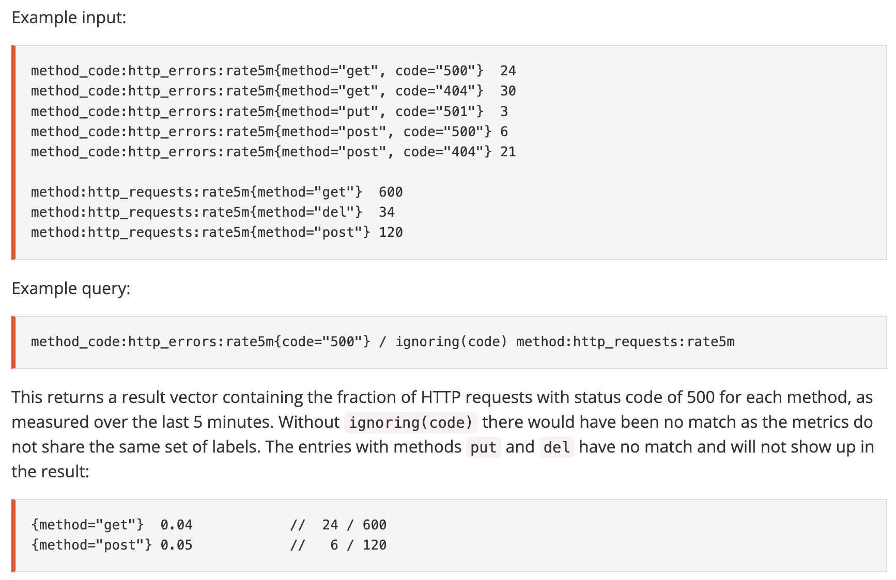
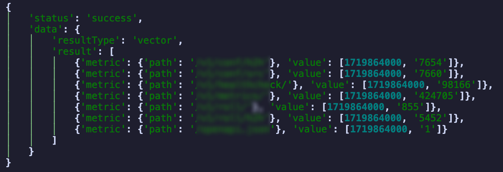
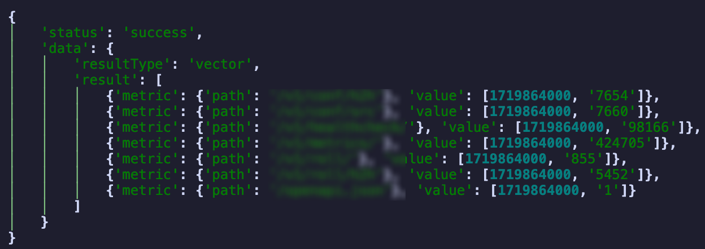
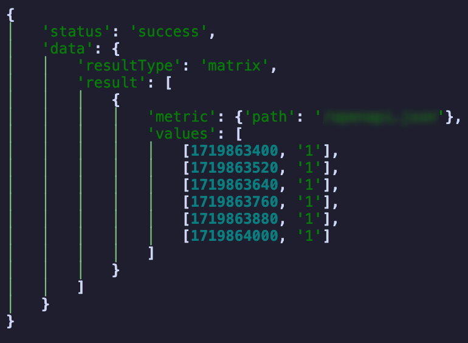
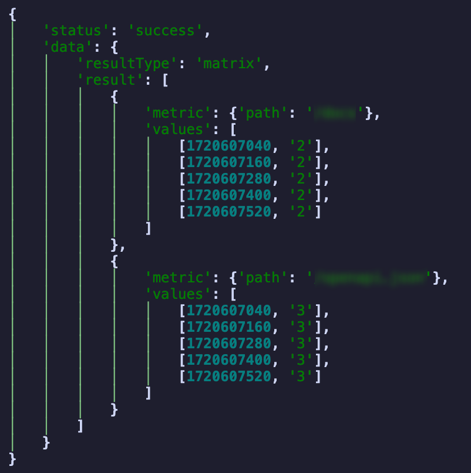
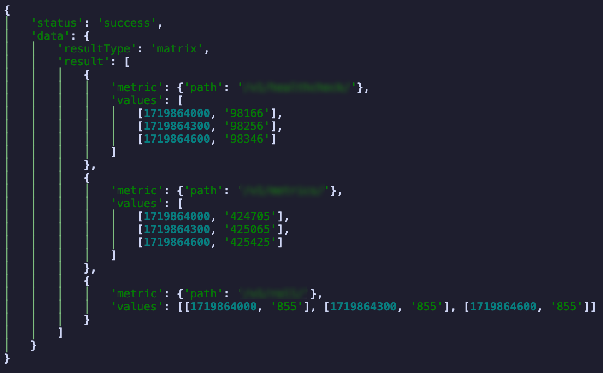
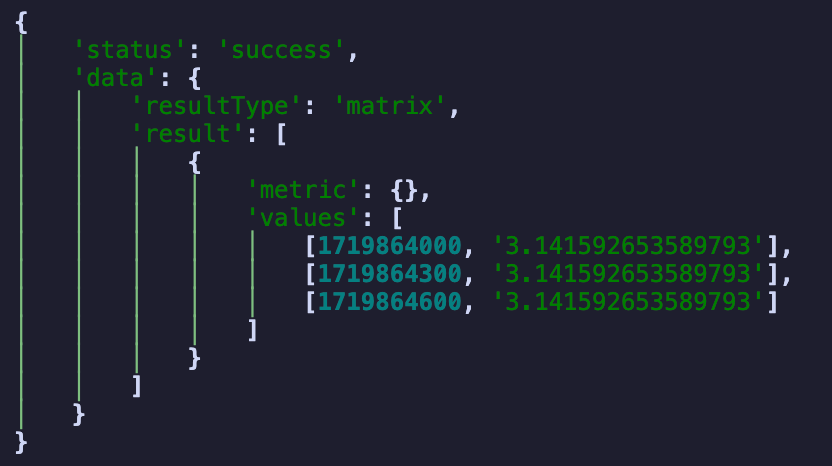

Prometheus¶
Prometheus 采集系统指标 (metrics)，并将其存储为时间序列 (time series)；并提供了一套强大的查询语言 PromQL，用于查询和分析这些指标。通常，我们会使用 Grafana 来把这些指标可视化。
本文主要介绍 Prometheus 的基本概念和查询方法。
Info
如果暂时从未实际接触过 Prometheus，您可以在 这里 找到一个 minimum 的 end-to-end 示例。
1 Concepts | 基本概念¶
1.1 Data Model | 数据模型¶
Prometheus 存储的内容是一系列 (metric_name, labels, timestamp, value)；其中：
metric_name是指标名，用于表明指标的含义 (e.g.http_requests_total)；labels是可选的，包含一组任意键值对，用于区分指标的不同维度 (e.g.method="GET")；- 例如
http_requests_total{method="GET", status="200"}表示GET请求返回200的总次数；
- 例如
(timestamp, value)被合并称为sample，表示在某个时间点下metric_name{labels}的值。timestamp的精度是毫秒，value是一个 float64 数值。
1.2 Prometheus 如何采集指标¶
常见语言都有 Prometheus 的 client library，用于在应用程序中采集指标并暴露出来。例如，服务可以在 /metrics 路径下暴露指标，指标可能形如：
# HELP python_gc_objects_collected_total Objects collected during gc
# TYPE python_gc_objects_collected_total counter
python_gc_objects_collected_total{generation="0"} 4.6086284e+07
python_gc_objects_collected_total{generation="1"} 2.1484146e+07
python_gc_objects_collected_total{generation="2"} 6.290886e+06
# HELP python_gc_objects_uncollectable_total Uncollectable objects found during GC
# TYPE python_gc_objects_uncollectable_total counter
python_gc_objects_uncollectable_total{generation="0"} 0.0
python_gc_objects_uncollectable_total{generation="1"} 0.0
python_gc_objects_uncollectable_total{generation="2"} 0.0
# HELP http_requests_total Total number of HTTP requests
# TYPE http_requests_total counter
http_requests_total{method="post",code="200"} 1027.0
http_requests_total{method="post",code="400"} 3.0
http_requests_total{method="get",code="200"} 10000.0
在服务中，每次接受到 http 请求时，会根据请求的 method 和 code 修改一次 http_requests_total 指标。Prometheus 每隔指定的一段时间会去 /metrics 拉取这些指标，获得上面代码块所示的数据，从而获取到 (metric_name, labels, timestamp, value) 的 data model。
Note
在 Prometheus 看来，一个 metric_name{labels} 的值是一个时间序列，即一系列 (timestamp, value) 的集合。如果 labels 的取值发生变化，Prometheus 会认为这是一个新的时间序列。
另外，在每次抓取数据时，Prometheus 还会额外记录以下指标：
up，1 表示抓取成功，0 表示失败；这对于检查实例是否可用非常有用；scrape_duration_seconds，抓取数据的耗时；- 还有更多，参见 Automatically generated labels and time series。
Info
有时，需要被监控的组件可能不支持被 Prometheus 直接抓取，此时可以在组件中 主动 Push；但这不会被包含在本文的内容中。。
1.3 Metric Types | 指标类型¶
Prometheus 的 client library 支持以下 4 种指标类型；但这只是一个便于使用的封装，在 Prometheus 中的指标仍然只有 (metric_name, labels, timestamp, value)
Counter：只增不减的计数器。在 client 中，支持c.inc()或c.inc(1.6)的操作来增加其值。Gauge：可增可减的值。在 client 中，支持g.set(3.2),g.inc()或g.dec(10)的操作来修改其值。Histogram：对观察的结果进行采样，记录到预先指定好的若干范围 (bucket) 中，用于统计数据的分布情况。在 client 中，支持h.observe(3.2)的操作来记录数据。参见下面的例子。Summary：对观察的结果进行采样，记录到预先指定好的若干分位数 (quantile) 中，用于统计数据的分布情况。在 client 中，支持s.observe(3.2)的操作来记录数据。参见下面的例子。
Warning
请注意：并非所有的 client library 都支持所有的指标类型。例如，截至目前 Python 的 client library prometheus_client 不支持 Summary 的 quantile 配置。
Histogram
Histogram 会将观察到的数据分桶 (bucket)，然后记录每个分桶的数据量。在创建一个 Histogram 指标时，需要指定各个 bucket 的上限值；Histogram 实际上会创建一系列不同的 metric 来记录观察得到的数据。下面是一个例子。
举例而言，我们使用名为 http_request_duration_seconds 的 histogram 指标来记录请求的响应时间；它包含 api 和 method 两个 label；我们定义了如下的几个 bucket: (0.1, 0.5, 1.0, Inf)。那么，假如有 http_request_duration_seconds(api="/foo", method="GET").observe(0.8)，那么 client 会记录如下的数据：
1 2 3 4 5 6 7 8 | |
1-4 行的几个 <metricName>_bucket 中记录了落到各个 bucket 的数据量；le (less than or equal to) 表示不大于该值的 observe 次数。第 6 行的 <metricName>_sum 记录了所有 observe 的数据和，第 8 行的 <metricName>_count 记录了 observe 的总量。
在此基础上，如果有 http_request_duration_seconds(api="/foo", method="GET").observe(0.4)，那么数据会变为：
1 2 3 4 5 6 7 8 | |
如果还有 http_request_duration_seconds(api="/bar", method="GET").observe(1.2)，那么会新增与上述类似的 6 个 time series。
Summary
与 Histogram 类似，Summary 也会创建一系列不同的 metric 来记录观察得到的数据；但它会记录不同的分位数 (quantile) 而非预先定义的 bucket。例如：
http_request_duration_seconds{quantile="0.5"} 0.232227334
http_request_duration_seconds{quantile="0.90"} 0.821139321
http_request_duration_seconds{quantile="0.95"} 1.528948804
http_request_duration_seconds{quantile="0.99"} 2.829188272
http_request_duration_seconds{quantile="1"} 34.283829292
http_request_duration_seconds_sum 8953.332
http_request_duration_seconds_count 27892
由于 Summary 需要使用流式算法来计算分位数，因此它的计算量会比 Histogram 大得多。
关于如何选择 Histogram 和 Summary，请参考 Histograms and Summaries | Prometheus。
2 Querying | 查询¶
Thanos
本文主要介绍 Prometheus；但在实际使用中，可能会使用 Thanos 来扩展 Prometheus 的功能。Thanos 提供了一些额外的功能，例如长期存储、查询优化、数据压缩等。
例如，每个集群的 Prometheus 负责收集所在集群各服务的 metrics 并提供一定的查询能力；而 Thanos 以 sidecar 的形式整合各个集群的 Prometheus 采集的指标并长期保存，并同样适用 PromQL 查询。
2.1 Data Types | 数据类型¶
在 PromQL 中，大多数表达式归属于以下 3 种类型之一：
- Scalar：单个浮点数数值；
- Instant vector：一组时间序列，每个时间序列包含它在查询时间点前最后一次被采样到的值。例如 Query
http_requests_total或者http_requests_total{method="GET"}返回在 query timestamp 这个时间点之前每个时间序列最后一次被采样到的值；- 请注意：即使
http_requests_total{method="GET"}得到的 instant vector 只包含 1 个元素，它也不能被视为 scalar。
- 请注意：即使
- Range vector：一组时间序列，每个时间序列包含它在查询时间段内每个时间点的值，例如
http_requests_total[5m]返回在 5 分钟内每个时间序列的值。
如果我们用 Python 做类比的话，上面的三个类型可以以如下方式表示：
1 2 3 4 5 6 7 8 9 10 11 12 | |
2.2 Time Series Selectors | 时间序列选择器¶
以下表达式具有类型 InstantVector：
http_requests_totalhttp_requests_total{method="GET"}- 对于没有被 matchers 提及的 label，则任何值全部接受。
- 对于同一个 label，可以有多个 matchers，它们之间是 AND 关系。
{__name__="http_requests_total", method="GET"}__name__是一个特殊的 label，用于匹配指标名。- 由此可见，selector 中不必包含 metric_name。
- 因此，该表达式和前一个例子等价。
http_requests_total{api=~"v1.*", code!~"20[0-9]", method!="POST"}=表示精确匹配，=~表示正则匹配，!=和!~表示不匹配，分别适用于字符串和正则表达式。- 正则表达式是 fully anchored 的，即
api=~"v1.*"等价于api=~"^v1.*$"。
http_requests_total offset 5m/http_requests_total{method="GET"} offset 5moffset用于指定时间偏移量，例如offset 5m表示向前偏移 5 分钟。
http_requests_total @ 1609746000/http_requests_total{method="GET"} @ 1609746000@用于指定时间戳，例如@ 1609746000表示在时间戳 1609746000 的时候的值。
哪些 time series 会被包含在查询结果中？
Prometheus 配置了一个 staleness 时长，默认值是 5 分钟。
在使用 Instant Vector Selector 时，在查询时间点前 staleness 时长的范围内出现过数据的所有 time series 会被包含在结果的 InstantVector 中；其值是该范围内最后一次采样到的值。
以下表达式具有类型 RangeVector：
http_requests_total[5m]http_requests_total{method="GET"}[5m]http_requests_total{method="GET"}[5m] offset 5mhttp_requests_total{method="GET"}[5m] @ 1609746000
哪些 time series 会被包含在查询结果中？
对于 Range Vector Selector，Prometheus 会返回在查询时间内出现过数据的所有 time series；其值是在查询时间范围内每个时间点的值。
2.3 Operators | 运算符¶
2.3.1 算术二元运算符¶
包括 +, -, *, /, % (取模), ^ (幂)。其行为是：
Scalar <op> Scalar：和正常算术一致；InstantVector <op> Scalar：返回对 InstantVector 中的每个元素应用<op>的结果；metric_name (__name__) 被删除；InstantVector1 <op> InstantVector2：对于 InstantVector1 中的每个元素，在 InstantVector2 中找到标签完全相同的元素，将其应用<op>的结果返回，metric_name (__name__) 被删除；如果没找到，则结果中不包含该 label；- 不接受 RangeVector。
2.3.2 比较二元运算符¶
包括 ==, !=, >, <, >=, <=。其行为是：
bool(Scalar <op> Scalar)：返回 0 或者 1；InstantVector <op> Scalar：返回结果中比较结果为真的元素保留，其余删除；bool(InstantVector <op> Scalar)：返回结果中将比较结果为真的元素置为 1，其余置为 0；metric_name (__name__) 被删除；InstantVector1 <op> InstantVector2：InstantVector2 作为过滤器：InstantVector1 在其中找不到标签完全相同的元素，或者对应元素比较结果为假的，将其删除；bool(InstantVector1 <op> InstantVector2)：类似前一条：保留的元素置为 1，其余置为 0；metric_name (__name__) 被删除；- 不接受 RangeVector。
2.3.3 逻辑（集合）二元运算符¶
包括 and, or, unless，只在 InstantVector 之间定义。其行为是：
iv1 and iv2(intersection)：返回 iv1 中的那些在 iv2 中具有完全相同标签的元素；iv1 or iv2(union)：返回 iv1 的所有元素，以及 iv2 中那些在 iv1 中没有完全相同标签集的元素；iv1 unless iv2(complement)：返回 iv1 中的那些在 iv2 中没有完全相同标签的元素。
2.3.4 Vector Matching¶
上面三节中描述的 InstantVector 之间的操作，都试图从右边的 InstantVector 中为左边的 InstantVector 中的每个元素找到标签匹配的元素。这个「匹配」过程也是可以控制的：
iv1 <bin-op> on(<label-list>) iv2将纳入考虑的标签限制在<label-list>中，其他标签全部忽略；iv1 <bin-op> ignoring(<label-list>) iv2将忽略<label-list>中的标签，其他标签全部纳入考虑。
下图展示了一个例子：

另外在算术和比较运算符中，还可以通过 group_left 和 group_right 实现一对多和多对一的匹配。本文暂且略去，参见 文档。
2.3.5 聚合运算符¶
Note
除了 topk 和 bottomk 以外，所有聚合运算符都会在结果中删除 metrics name (__name__)，因为所得的值经过了处理，而原来 metrics name 不再有意义。
聚合运算符将 InstantVector 按照标签聚合为元素更少的 InstantVector。例如：
sum(http_requests_total)：返回一个单元素的 InstantVector，标签为{}，值为所有http_requests_total的和；sum(http_requests_total{method="GET"})：返回一个单元素的 InstantVector，标签为{}，值为所有http_requests_total{method="GET"}的和；sum(http_requests_total) by (method)：返回一个 InstantVector；对于http_requests_total中的每个不同的method，返回一个元素，标签只有method，值为所有对应 method 的http_requests_total的和；sum(http_requests_total) by (method, code)：类似，对于(method, code)的每种存在的组合，返回一个元素。sum(http_requests_total) without (method)：与by相反：对于除了method以外的所有标签的每种存在组合，返回一个元素。- 例如，标签只有
method, code, api的话，那么by (method)和without (code, api)等价。
- 例如，标签只有
以上的 without 和 by 不能共用；另外 sum(v) by (<labels>) 和 sum by (<labels>) (v) 是等价的。
即：我们通过 by 或者 without 将 InstantVector 按照标签 分组，然后完成聚合操作；如果没有指定分组，则认为所有标签属于一组。这样的聚合运算符包括：
sum: 每组中所有元素的和；max,min,avg,stddev,stdvar: 分别是最大值、最小值、平均值、标准差、方差；group: 结果中的值全部为 1；count: 每组中元素的个数。
另外，还有一些聚合函数含有参数，其使用方法形如 count_values("api", http_requests_total) by (code)，表示对于每个 code，统计 label api 的不同值的个数。这样的聚合运算符包括：
count_values(label, v): 对于每个组，统计 label 的不同值的个数；quantile(φ, v): 对于每个组，计算其中所有值中 φ 分位的值。
与上述不同的两个聚合运算符是 topk 和 bottomk，它们保留每组中的前 k 个或后 k 个元素。
2.4 Functions | 函数¶
Note
请注意：几乎所有的函数 (除了 sort, sort_desc, label_replace) 都会在结果中删除 metrics name (__name__)，因为所得的值经过了处理，而原来 metrics name 不再有意义。
下面，我们使用 IV 和 RV 分别替代 InstantVector 和 RangeVector。
数学运算¶
- 【绝对值】
abs(v: IV) -> IV: 结果中每个元素的值是原来元素的绝对值。 - 【符号函数】
sgn(v: IV) -> IV: 结果中每个元素的值是原来元素的正负性，即 1、0、-1。 - 【向上取整】
ceil(v: IV) -> IV: 结果中每个元素的值是原来元素的向上取整。 - 【向下取整】
floor(v: IV) -> IV: 结果中每个元素的值是原来元素的向下取整。 - 【四舍五入】
round(v: IV, to_nearest: Scalar = 1) -> IV: 结果中每个元素的值是原来元素的四舍五入值，取到最接近的to_nearest的倍数；to_nearest可以是分数。 - 【指数】
exp(v: IV) -> IV: 结果中每个元素的值是原来元素的指数 \(e^x\)。 - 【自然对数】
ln(v: IV) -> IV: 结果中每个元素的值是原来元素的自然对数 \(\ln(x)\)。 - 【对数】
log2(v: IV) -> IV,log10(v: IV) -> IV: 结果中每个元素的值是原来元素的对数。 - 【平方根】
sqrt(v: IV) -> IV: 结果中每个元素的值是原来元素的平方根。 - 【三角函数】另外还有这些三角函数，和上述类似：
sin,cos,tan,asin,acos,atan,sinh,cosh,tanh,asinh,acosh,atanh。 - 【角度和弧度】
deg(v: IV) -> IV,rad(v: IV) -> IV: 将角度和弧度相互转换。 - 【\(\pi\)】
pi() -> Scalar返回 \(\pi\)。
时间¶
- 【求值时的时间】
time() -> Scalar: 返回计算表达式时的时间戳，即自 UTC 1970 年 1 月 1 日以来的秒数。 - 【时间戳】
timestamp(v: IV) -> IV: 返回 v 中每个时间序列的时间戳。 day_of_month(v: IV = vector(time())) -> IV: 返回 v 中每个时间序列的时间戳在所在月的第几天。- 类似地，还有
day_of_week,day_of_year
- 类似地，还有
hour(v: IV = vector(time())) -> IV: 返回 v 中每个时间序列的时间戳的在所在天中的小时 (0-23)。- 类似地，还有
minute,year,month
- 类似地，还有
days_in_month(v: IV = vector(time())) -> IV: 返回 v 中每个时间序列的时间戳对应的月份中有几天。
判断是否为空¶
absent(v: IV) -> IV: 如果 v 有任何元素，则返回一个空 vector；否则返回一个值为 1 的单元素 vector，label 为 v 中各元素 label 的共同部分。- 用例：查询是否有 500 错误：
absent(http_requests_total{code="500"})
- 用例：查询是否有 500 错误：
absent_over_time(v: RV) -> IV: 如果 v 在时间范围内有任何元素，则返回一个空 vector；否则返回一个值为 1 的单元素 vector，label 为 v 中各元素 label 的共同部分- 用例：查询最近 5 分钟是否有 500 错误：
absent_over_time(http_requests_total{code="500"}[5m])
- 用例：查询最近 5 分钟是否有 500 错误：
限制样本值¶
clamp(v: IV, min: Scalar, max: Scalar) -> IV: 结果中每个元素的值如果小于 min，则取 min；如果大于 max，则取 max；否则保持不变。- 特别地：如果 min > max，则返回一个空 vector；如果 min 或 max 是 NaN，则结果为 NaN。
clamp_max(v: IV, max: Scalar) -> IV,clamp_min(v: IV, min: Scalar) -> IV: 与前一条类似。
变化情况¶
- 【变化次数】
changes(v: RV) -> IV: 返回 v 中每个时间序列的变化次数。- 用例：查询最近 5 分钟 500 错误的变化次数：
changes(http_requests_total{code="500"}[5m])
- 用例：查询最近 5 分钟 500 错误的变化次数：
- 【差值】
delta(v: RV) -> IV: 返回 v 中每个时间序列的最后两个样本值的差值。- 用例：查询最近 5 分钟 500 错误的差值：
delta(http_requests_total{code="500"}[5m]) - 结果可能是非整数，因为必要时会进行插值。
- 用例：查询最近 5 分钟 500 错误的差值：
- 【增量】
increase(v: RV) -> IV: 返回 v 中每个时间序列的增量。这只应被用于 Counter 类型的指标 (但并不会检查)。- 它和
delta的区别在于：如果时间范围内指标因为重启或者其他原因而破坏了单调性，increase会加以补偿，例如0 -> 10 -> 2 -> 15会被补偿为0 -> 10 -> 12 -> 25。 - 用例：查询最近 5 分钟 500 错误的增量：
increase(http_requests_total{code="500"}[5m])
- 它和
- 【瞬时差值】
idelta(v: RV) -> IV: 返回 v 中每个时间序列的最后两个样本值的差值。这只应被用于 Gauge 类型的指标 (但并不会检查)。 - 【导数】
deriv(v: RV) -> IV: 返回 v 中每个时间序列用 简单线性回归 计算出导数。这只应被用于 Gauge 类型的指标 (但并不会检查)。- 用例：查询最近 5 分钟 500 错误的变化率：
deriv(http_requests_total{code="500"}[5m])
- 用例：查询最近 5 分钟 500 错误的变化率：
- 【Smoothing】
holt_winters(v: RV, sf: Scalar, tf: Scalar) -> IV: 使用 Holt-Winters 指数平滑算法对 v 进行平滑处理。sf 和 tf 分别是平滑因子和时间因子。 - 【增长率】
rate(v: RV) -> IV: 返回 v 中每个时间序列的增长率。这只应被用于 Counter 类型的指标。如果时间范围内指标因为重启或者其他原因而破坏了单调性，会加以补偿。- 用例：查询最近 5 分钟 500 错误的增长率：
rate(http_requests_total{code="500"}[5m])
- 用例：查询最近 5 分钟 500 错误的增长率：
- 【瞬时增长率】
irate(v: RV) -> IV: 返回 v 中每个时间序列基于最后两个样本值计算出的瞬时增长率。这只应被用于绘制不稳定的、快速增长的 counters。如果时间范围内指标因为重启或者其他原因而破坏了单调性，会加以补偿。 - 【线性预测】
predict_linear(v: RV, t: Scalar) -> IV: 基于 简单线性回归，预测 v 中每个时间序列在 t 秒后的值。 - 【重置次数】
resets(v: RV) -> IV: 返回 v 中每个时间序列的重置次数（两次连续采样中的任何减少都被认为是重置）。这只应被用于 Counter 类型的指标。
标签操作¶
- 【标签替换】
label_replace(v: IV, dst_label: String, replacement: String, src_label: String, regex: String) -> IV: 对于 v 中的每个 time series，如果其标签src_label的值匹配regex，则将其替换为replacement，放到dst_label中；如果不匹配，则保持不变。replacement中可以使用$1,$2, ... 来引用regex中的分组。- 例如，
label_replace(http_requests_total{method="GET"}, "new_label", "$1", "api", "(.*)/.*")会将http_requests_total{api="a/b"}转换为http_requests_total{new_label="a"}。
- 例如，
- 【标签连接】
label_join(v: IV, dst_label: String, separator: String, src_label_1: String, src_label_2: String, ...) -> IV: 将 v 中的标签 src_label_1, src_label_2, ... 的值连接起来，用 separator 分隔，放到 dst_label 中。- 例如，
label_join(http_requests_total{method="GET"}, "new_label", "-", "method", "code")会将http_requests_total{method="GET", code="200"}转换为http_requests_total{new_label="GET-200"}。
- 例如，
类型转换¶
- 【类型转换】
scalar(v: IV) -> Scalar: 如果 v 恰有 1 个时间序列，返回其值；否则返回 NaN。 - 【类型转换】
vector(s: Scalar) -> IV: 将 s 转换为一个时间序列，其值为 s，没有标签。
排序¶
- 【排序】
sort(v: IV) -> IV,sort_desc(v: IV) -> IV: 返回 v 中的时间序列按照值排序后的结果。 - 【按 label 排序】
sort_by_label(v: IV, label: String, ...) -> IV,sort_by_label_desc(v: IV, label: String, ...) -> IV: 返回 v 中的时间序列按照指定label排序后的结果；如果标签一致，按样本值排序。- 排序采用 natural sort order，即
z2排在z11之前。
- 排序采用 natural sort order，即
用于 RV 的聚合¶
<aggregation>_over_time(v: RV) -> IV: 随时间聚合 v 中的每个时间序列。<aggregation> 可以是给定区间内的：
avg：平均值；min：最小值；max：最大值；sum：和；count：计数；quantile_over_time(φ: Scalar, v: RV) -> IV：给定区间内的 φ 分位数；stddev：标准差；stdvar：方差；last：最后一个值；present：返回所有出现过的标签值，值均为 1。
直方图相关函数¶
2.5 Subqueries | 子查询¶
查询中可以包含子查询。例如 max_over_time(deriv(rate(distance_covered_total[5s])[30s:5s])[10m:])，我们由内而外地解释这个查询的含义：
[rv1]:distance_covered_total[5s]：RV, 取distance_covered_total5s 内的采样值- 我们可以理解为「5s 的各个采样点时内 (各个 label 标记的，下同) 车辆行进的距离」
[iv2]:rate(rv1):IV，计算rv1的增长率- 我们可以理解为「5s 内的车辆行进的距离的增长率」，即「5s 内车辆的速度」
[rv3]:iv2[30s:5s]:RV, 取增长率近 30s 的采样值，分辨率为 5s- 分辨率 (resolution) 是指多少秒一个样本。即，
rv3由iv2近 30s 内每 5s 做一次查询的结果组成 - 我们可以理解为「近 30s 内每 5s 的车辆速度」
- 分辨率 (resolution) 是指多少秒一个样本。即，
[iv4]:deriv(rv3):IV，计算rv3中每个时间序列的导数- 我们可以理解为「近 30s 内车辆速度的变化率」，即「30s 内车辆的加速度」
[rv5]:iv4[10m:]:RV, 取iv4近 10m 的采样值iv4[10m:]表示取iv4中最近 10m 的数据，分辨率为查询的默认设置- 我们可以理解为「近 10 分钟内各个采样点计算出的车辆的加速度」
[iv6]:max_over_time(rv5):IV，计算rv5中每个时间序列的最大值- 我们可以理解为「近 10 分钟内车辆的最大加速度」
2.6 API¶
2.6.1 即时查询¶
即时查询获取 Query 在当前时间或给定时间点的结果；接口为 /query，参数包括 query, time 和 timeout。例如：
INSTANT_QUERY = "query/"
def instant_query(promql: str, time: Optional[str] = None, timeout: Optional[str] = None):
url = f"{API}{INSTANT_QUERY}"
params = {
"query": promql,
"time": time,
"timeout": timeout
}
response = requests.get(url, params=params)
if not response.ok:
raise requests.HTTPError(f"Failed to query {url}: {response.text}")
return response.json()
promql = '''sum(fastapi_requests_total{path!="/metrics"}) by (path)'''
time = "2024-07-01T20:00:00.000Z" # rfc3339 OR unix_timestamp
timeout = "10s"
result = instant_query(promql, time, timeout)
pprint(result)

(pprint 来自 rich.pretty。)
使用 POST 也能够进行查询，例如：
def instant_query(promql: str, time: Optional[str] = None, timeout: Optional[str] = None):
url = f"{API}{INSTANT_QUERY}"
data = {
"query": promql,
"time": time,
"timeout": timeout
}
response = requests.post(url, data=data)
if not response.ok:
raise requests.HTTPError(f"Failed to query {url}: {response.text}")
return response.json()
result = instant_query(promql, time, timeout)
pprint(result)

查询的结果中有一个 resultType，表示结果的类型。结果可能是 string, scalar, vector (表示 Instant Vector), matrix (表示 Range Vector) 之一。这意味着我们也可以查询 RangeVector，例如：
promql = '''sum(fastapi_requests_total{path=~"/[^/]*"}) by (path) [10m:2m]'''
result = instant_query(promql, time, timeout)
pprint(result)

如果不提供 time，则表示查询当前时间的结果：
result = instant_query(promql, None, timeout)
pprint(result)

2.6.2 范围查询¶
范围查询获取 Query 在给定的一段时间内、给定频率下的结果；接口为 /query_range，参数包括 query, start, end, step 和 timeout。例如：
RANGE_QUERY = "query_range/"
def range_query(promql: str, start: str, end: str, step: str, timeout: Optional[str] = None):
url = f"{API}{RANGE_QUERY}"
data = {
"query": promql,
"start": start,
"end": end,
"step": step,
"timeout": timeout
}
response = requests.post(url, data=data)
if not response.ok:
raise requests.HTTPError(f"Failed to query {url}: {response.text}")
return response.json()
promql = '''sum(fastapi_requests_total{path=~"/v1/[^/]*/"}) by (path)'''
start = "2024-07-01T20:00:00.000Z"
end = "2024-07-01T20:10:00.000Z"
step = "5m"
result = range_query(promql, start, end, step, timeout)
pprint(result)

但是，range query 不支持查询 Range Vector，只能查询 Instant Vector, Scalar 或 String。因为 Range Vector 本身就是一段时间内的 Instant Vector，所以范围查询的结果是一个 matrix：
promql = '''sum(fastapi_requests_total) by (path) [10m:2m]'''
try:
range_query(promql, start, end, step, timeout)
except requests.HTTPError as e:
print(e)
结果是 Failed to query <API>: {"status":"error","errorType":"bad_data","error":"invalid expression type \"range vector\" for range query, must be Scalar or instant Vector"}。
即使查询结果是一个 Scalar，返回类型也是一个 matrix：
promql = '''pi()'''
result = range_query(promql, start, end, step, timeout)
pprint(result)

其他接口¶
还有更多接口可以玩！详见 HTTP API | Prometheus
3 Examples¶
Note
这一节会记录一些我用到 / 见到的查询样例。
颜色主题调整
评论区~
有用的话请给我个赞和 star => 快来跟我聊天~
快来跟我聊天~